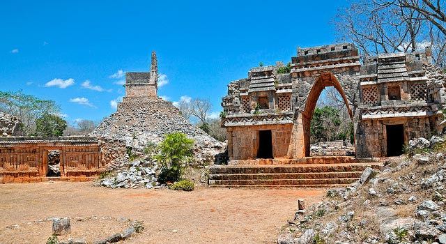

Acanceh
Acanceh, Yucatán
Acanceh (pronúnciase Acanqué) es un yacimiento arqueológico maya localizado en la ciudad moderna de Acanceh,
en el municipio homónimo, que recibe el mismo toponímico, cuyo significado en español es (del maya: Acanceh: el lamento del venado (por extensión: venado que muere)).
El yacimiento está localizado a 21 km al sureste de Mérida, la capital de Yucatán, en una desviación de la carretera que conduce a Mayapan. En la plaza principal de la ciudad de Acanceh pueden verse dos de los edificios mayas parcialmente restaurados: la Pirámide y el Palacio de los Estucos. La ciudad maya cubría una extensión de más de 4 km², en la cual se han registrado más de 400 construcciones.
El yacimiento está localizado a 21 km al sureste de Mérida, la capital de Yucatán, en una desviación de la carretera que conduce a Mayapan. En la plaza principal de la ciudad de Acanceh pueden verse dos de los edificios mayas parcialmente restaurados: la Pirámide y el Palacio de los Estucos. La ciudad maya cubría una extensión de más de 4 km², en la cual se han registrado más de 400 construcciones.
Costo por accesso: Si